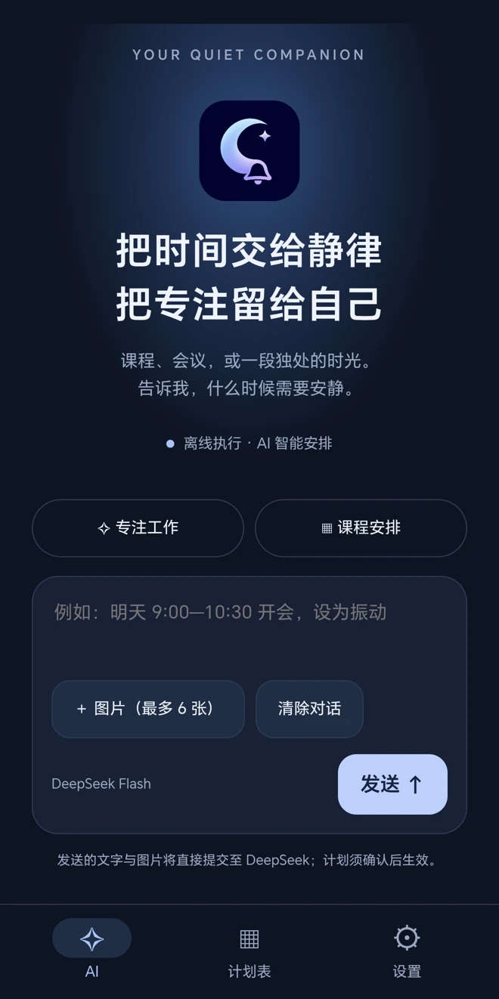
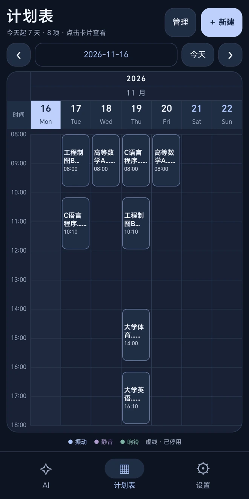

说出安排，交给 AI 理解
输入文字或上传课表图片，让 DeepSeek 帮你整理时间。先核对方案，再确认保存。
文字与图片 · 多轮沟通YOUR QUIET COMPANION
课程、会议，或一段独处的时光。
让手机跟随你的安排，在需要时安静下来。
Android 10+ · 已保存计划离线执行 · GPL-3.0

LESS INTERRUPTION, MORE FOCUS
从一句安排，到一周的从容。
输入文字或上传课表图片，让 DeepSeek 帮你整理时间。先核对方案，再确认保存。
文字与图片 · 多轮沟通在滚动七日计划表中查看安排，支持课时表与单双周规则，随时编辑、启停。
七日视图 · 周期计划已保存的计划由本机定时调度，按安排切换静音、振动与响铃。AI 断网不影响已保存计划。
本地存储 · 原生调度
YOUR WEEK, AT A GLANCE
从今天出发，看见未来七天。
课程、会议与专注时段，各在其位。
截图为拍摄时的课表展示，具体安排由你设定。
A LITTLE SETUP. A QUIETER DAY.
不必在每一堂课、每一场会议前，
反复记起那个静音按钮。
“明天上午 9 点到 11 点，保持静音。”
核对时间和模式，保存后开始执行。
完成系统授权，让静律按计划切换。
MAKE ROOM FOR QUIET
下载 Silora 静律，安排你的下一段安静时光。
Android 10 及以上 · 请在发布列表选择所需安装包
已保存的计划在本机离线执行。AI 理解文字和图片需要联网，并配置自己的 DeepSeek API Key；你也可以手动管理计划。
按应用指引授予精确闹钟和通知策略访问等权限，并在手机系统中允许后台活动。厂商后台限制和系统休眠可能影响执行；强行停止应用后，需要重新打开。
计划与设置保存在本机。使用 AI 时，你提交的文字与图片直接发送给 DeepSeek；静律没有自建服务器。API Key 通过 Android Keystore 加密保存。